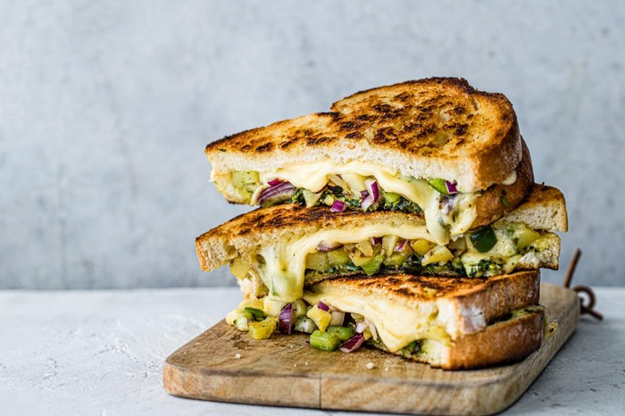

The Left Over Toastie
Turning last night's dinner into a weapon of the morning after

Description
The Leftover Toastie makes use of what ever is left in your fridge into a solid feed!
Ingredients
- Leftover Dinner
- Two slides of white bread
- Butter
- 50g shredded cheese (any flavour)
Method
- Take a portion of leftover dinner and place in microwave. Heat for 45 seconds
- Butter two slices of bread
- Place leftover inside slices of bread with shredded cheese, ensuring buttered side of bread is on OUTSIDE of sandwich.
- Heat fry pan or toastie maker.
- Place sandwich in pan or toastie maker until done. If cooking in pan you should cook one side until brown then flip and repeat.
- Plate then serve with condiment of choice.